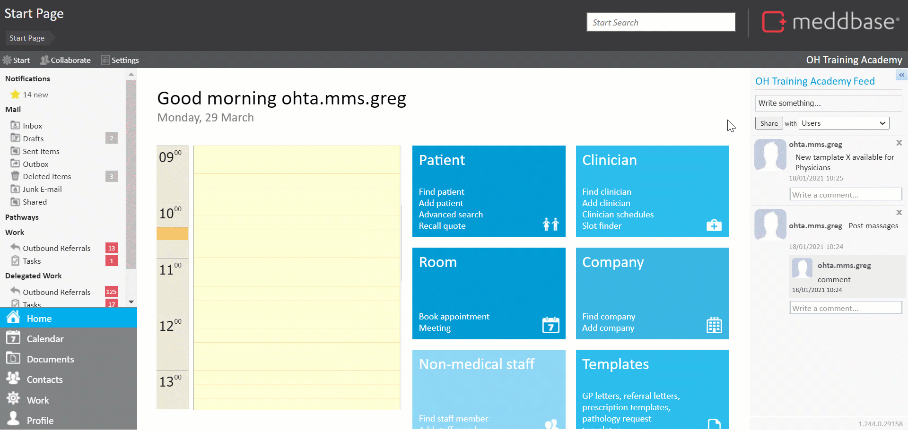
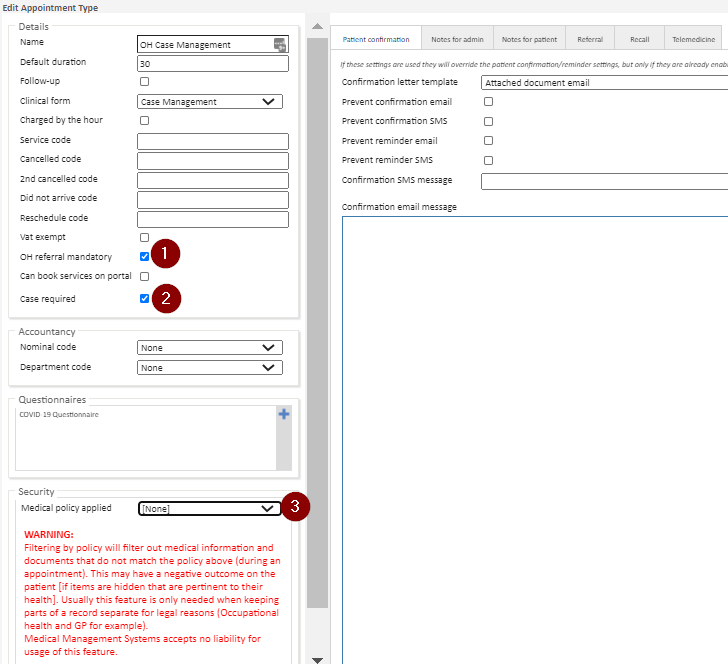
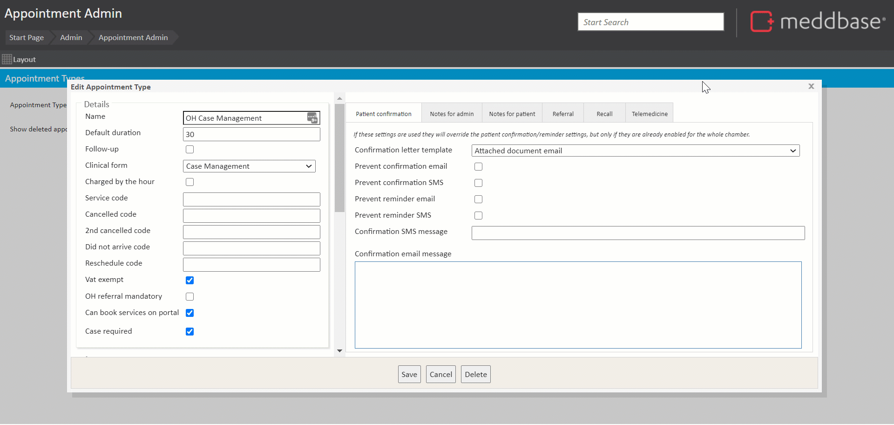
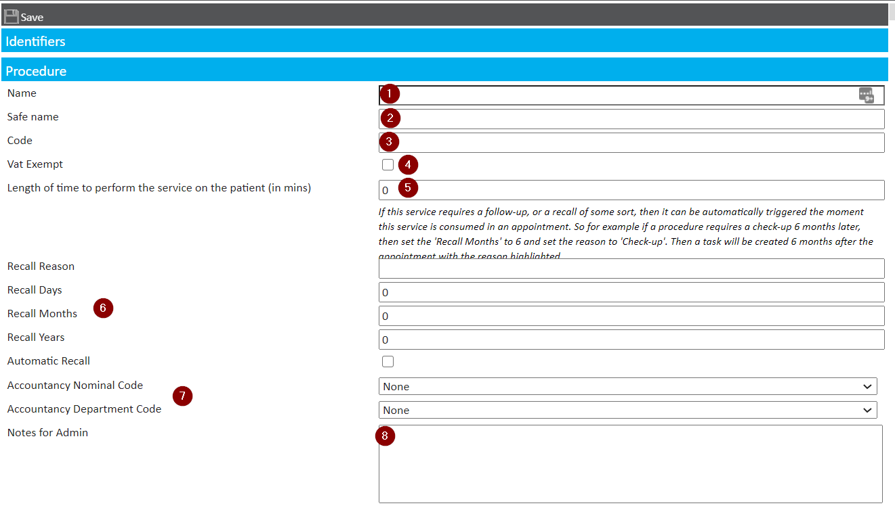
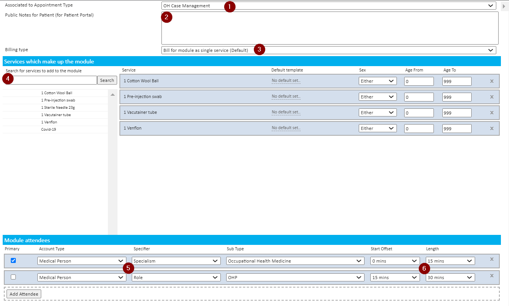
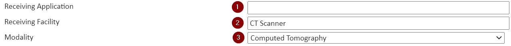
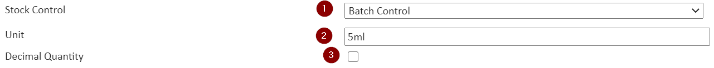
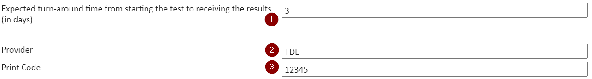

Meddbase gives users access to a comprehensive platform accommodating various aspects and workflows in Occupational Health (OH). This functionality requires multiple configuration tasks to be completed in Meddbase.
What is the article purpose?
This article will walk you through the 2nd part of the initial configuration required to use the Occupational Health functionality in Meddbase. The configuration steps discussed here are:
Additional configuration options for OH
Setting up Appointment types via Appointment Admin
Setting up Service Types via Service Management*
Additional configuration options for OH
There is a section of the system containing additional settings, options, and templates that the Referral Portal will utilize:
From the Start Page, navigate to Admin > Configuration > Online Portal
This section will become visible after the OH Portal feature is switched on. Please see Part 1of the initial OH setup.
There are many pre-configured settings and templates here. You can change them if need be in relation to OH workflows like PPQ, Absence Management, MI Reports and more. These workflows are described in detail in articles in this knowledgebase.
Setting up Appointment Types via Appointment Admin
Another task in the process of configuring OH in Meddbase is to create appointment types meant to be used for referrals. Appointment Types will be the 'blocks' booked on clinicians' schedules.
Any appointment type can be used for a referral, however, the appointment type must have at least one associated specialism to be referred.
To configure an appointment type, the following process applies:
From the Start Page, navigate to Admin > Appointment Admin
To create a new appointment type, hit New, to edit an existing appointment type, select it from the dropdown and hit Edit.

The Appointment Configuration dialog window allows many OH-specific aspects to be determined for an appointment type:
OH Referral Mandatory - when booking this appointment type in Meddbase it has to be linked to a referral.
Case Required - when booking this appointment type in Meddbase it has to be linked to a case.
*(Optional) Medical policy applied - when parts of the patient's medical record need to be kept separate for legal reasons (e.g. OH and GP services offered in the same chamber), different medical policies can be applied for OH and non-OH appointment types, so that information captured and documents created during the respective appointment type can only be viewed by staff with permissions granted on the particular Medical Certificate.
Any OH-only appointment type should have an OH Medical Policy applied

Furthermore, clicking on the ‘Referral’ tab will bring up the required options.
The ‘Specialism’ option can be set to any suggestion available in the catalogue and is visible in reporting as well as the incoming referral task.
This same dialogue also allows you to select the ‘Referral Questionnaire’ to be completed by the referrer at the time of referring. If left blank, no form will be required to refer and this stage will be skipped when referring.

* Remember to click 'Save' when making changes.
Setting up Service Types via Service Management*
Another aspect of configuration is governed by Service Management, where Modules, PACS services, Procedures, Products, Tests and Vaccinations you wish to offer can be defined.
Meddbase can accommodate various workflows and since different OH providers have different ways of providing services and different workflows apply to them, there is no right or wrong way to configure appointment types and services. Some OH providers only configure appointment types and no services, others configure a handful of core appointment types and configure all other services in Service Management e.g. as Modules.
How to create a new service type?
When a new service is created, there are common values that can be applied for all service types.There are additional settings that are relevant. To begin to configure a new service type, from the Start Page, navigate to Admin > Service Management, hit New and select the service type you'd like to create.
There are common configuration options for all service types. For each service type you can:
Assign a Name
Assign a Safe Name - this will appear on an invoice instead of the 'Name' when this service is consumed
Assign a Code - for reporting purposes e.g. service utilization
Make service VAT Exempt or not
Assign a length of Time - when this service is added to a booking, the time will be added to the overall booking length
Define a Recall for the service - recall reason, recurrence and recall automation (a recall Task created automatically)
Assign Nominal and Department codes to the service - for accountancy integration and reporting purposes
Add Notes for Admin - these will pop-up in the screen of the Meddbase user booking this service

From here you can:
Continue to add in further configuration settings relevant to the service type (described in different sections below).
Save the service.
Additional configuration options relevant to specific service types
Modules:
Associated to Appointment Type - when booking via the Slot Finder, this module will only be available with the associated appointment type
Public notes for Patient Portal - these will be displayed under the module name when booking via the Patient Portal
Billing Type - allows billing for the module as a single service or procedure, or billing for individual services which make up the module
Service which make up the module - multiple services can be selected as parts of the module
Module attendees - multiple professionals can be required to conduct the module. They can be specified by their Specialism or Role Group they belong to.
The point in time (Start Offset) when an attendee is required and the length of time (Length) they are required for during the module can be configured, so that module attendees only get the required duration at the right time booked on their respective schedules.

PACS:
Receiving Application
Receiving facility - the piece of equipment that will produce the image
Modality - selecting the modality the PACS service belongs to; the option to create multipart PACS services is also available here

Products and Vaccinations:
Stock Control - selection of the the type of stock control the product or vaccine will be governed by. Stock Control allows tracking quantities, Batch Control allows tracking quantities, expiry dates, batch numbers and trade names
Unit - what is a single unit of the product or vaccine e.g. 5ml ampoule, pack of 10 etc.
Decimal Quantity - allows dispensing decimal quantity when the unit is larger than the amount dispensed

Tests:
Expected turn-around (in days) - the value entered here generates a Result Reminder task and/or email after the stated length of time had elapsed and the lab had not returned the result*
Provider - the laboratory providing the test and examining the specimen written in capital letters**
Print Code - TDL laboratories require a print code for all tests they process. The codes are provided by the laboratory from their catalogue.
* The above requires 'service reminder' to be enabled under Admin > Configuration > Task Checker ** Meddbase supports electronic pathology request and/or response with TDL and HCA laboratories in the UK. Non-UK laboratories are not supported for electronic request/result and a manual process would apply.

How to Edit a service type
This process is very similar to creating a new service (as described above). To do this:-
From the Start Page, navigate to Admin > Service Management
Navigate through the list of existing services
Select the item to be edited
Make changes (using the ‘How to create a service’ as an option)